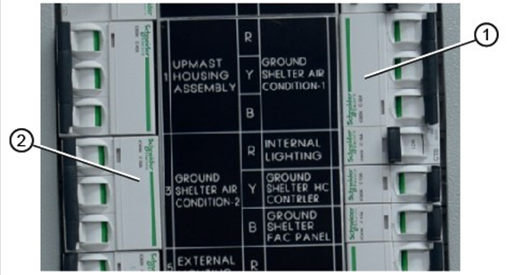

To work safely on this equipment,
the circuit breakers for the Air Conditioning
Unit must be switched off. See item 1
and 2 on the following picture:

CAUTION
Do NOT operate the system
without proper air filters
Keeping clean air filter(s) is
the single most important responsibility of the user
of the equipment. Each type of system must be
equipped with an air filter(s) in the indoor
circulating air system to clean the air, to keep the
system itself clean for peak efficiency and
capacity, and to prolong the useful life of the
equipment.
Note
Coil must be kept clean
The outdoor coil must be kept
clean and free of any airborne debris, which can
accumulate over time. Large volumes of air are
circulated over the coil, and airborne debris such
as lint, dust, materials shed from trees, paper or
other types of airborne material that can become
airborne can collect on the entering coil
surface.
The outdoor coil must dissipate
heat during the cooling mode, and the heat pump must
absorb heat during the heating mode. If the coil is
dirty and matted with debris, the airflow across the
coil will be reduced causing poor performance,
increased operating run time and in extreme
conditions can shorten the useful life of the
equipment.
Note
Check the airflow
Depending on the specific
equipment involved, the surface that can accumulate
debris can be on the opposite side that is exposed
to view when standing in front of the machine.
Closely review the machine when operating to see
which direction or path that the airflow moves
through the machine, and if the air inlet side of
the coil is hidden, try to observe the back (hidden)
side by looking into the side grilles, using
flashlight if necessary.
Check drainage condensation pipe for any blockage.
There is a condensate drain system for all air
conditioners and heat pumps, and this must be kept open and free to convey
the condensate generated by the operation of the equipment to a suitable
location.
Check air filter for any signs of wear and tear.
Filters should be inspected at least monthly, and
replaced or cleaned (depending on type) as needed. The useful life of an air
filter can vary widely depending upon application and use of the equipment.
A common symptom of a dirty filter in the cooling mode is a freeze-up of the
indoor coil.